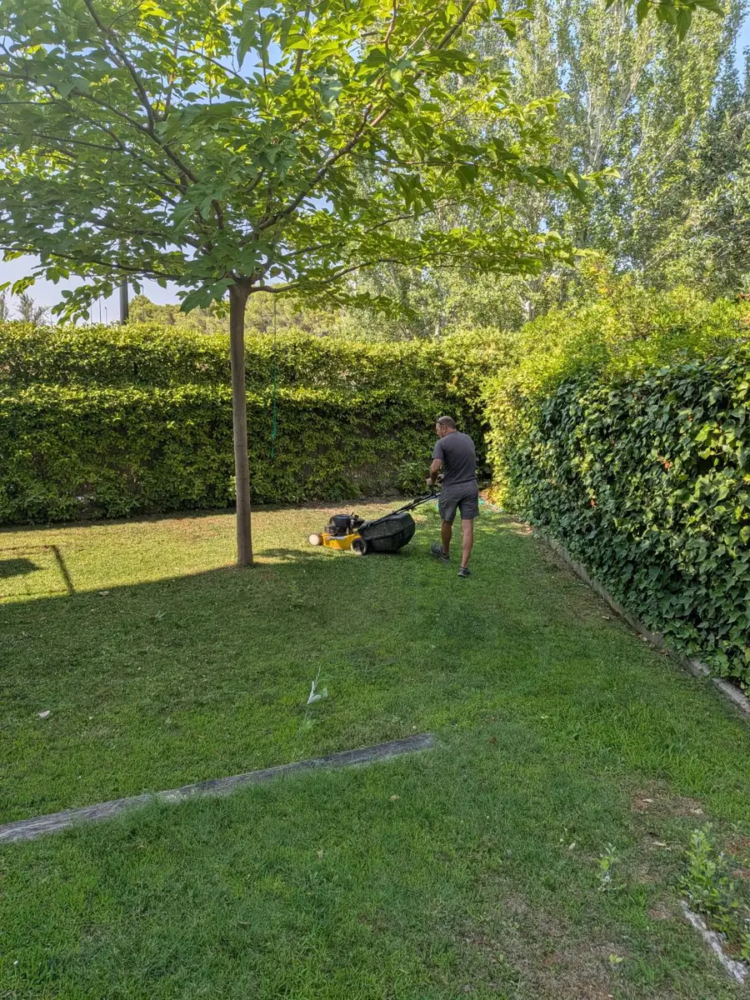
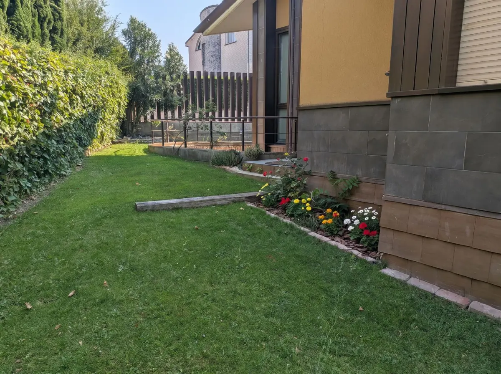
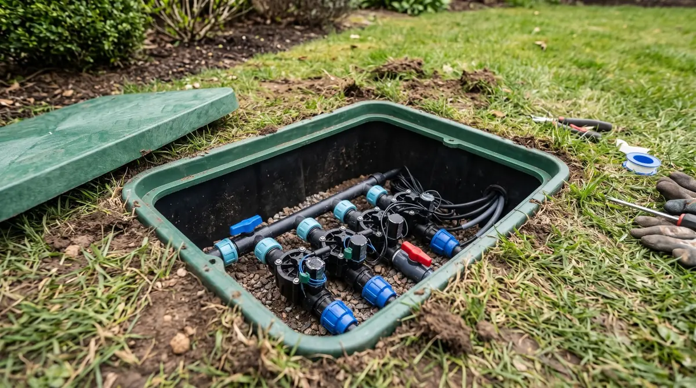
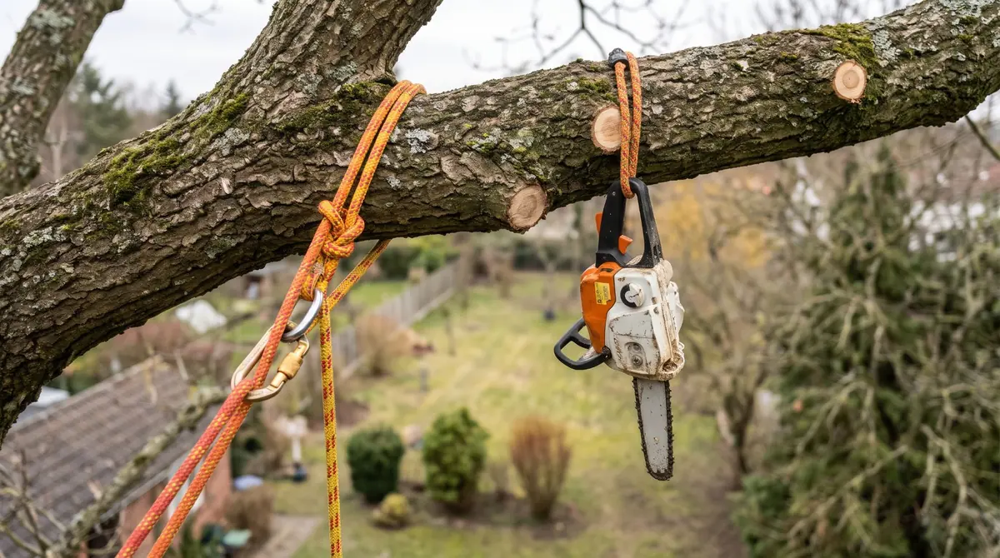
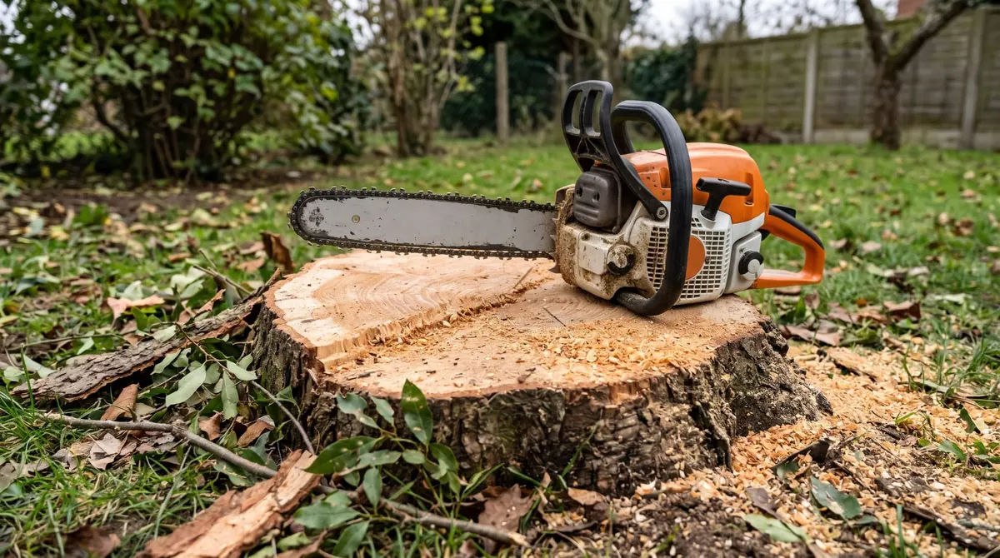
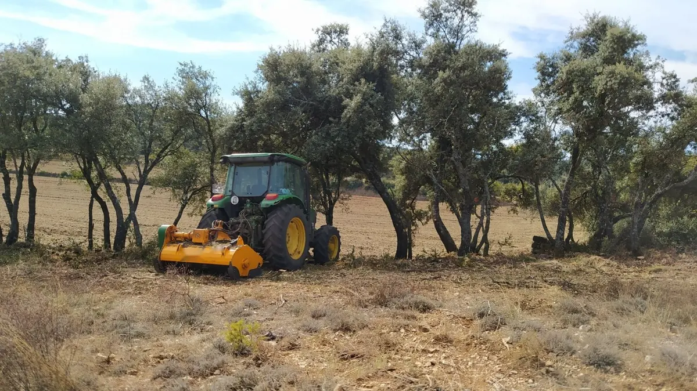

Su jardín, sus árboles y su finca, en buenas manos
Jardinería, riego, poda, tala y desbroce en Zaragoza y alrededores, para chalets, comunidades y fincas rústicas. Nos ocupamos de todo: desde pedir los permisos hasta llevarnos los restos.

Usted se despreocupa. Si el trabajo necesita permiso del ayuntamiento o de Medio Ambiente, lo tramitamos nosotros, y al terminar dejamos la zona limpia.
Servicios
De forma periódica o para un trabajo puntual.

Mantenimiento de jardines
Siega, setos, riego y limpieza con visitas programadas. También plantación y reforma de zonas del jardín.
Ver el servicio →
Riego automático
Instalación y reparación de riego automático: aspersores, goteo, electroválvulas y programador.
Ver el servicio →
Poda y arboricultura
Poda de formación, de limpieza y en altura. Revisamos si el árbol tiene grietas, pudriciones o ramas con riesgo.
Ver el servicio →
Tala y destoconado
Tala controlada de árboles junto a casas, muros o cables, y retirada del tocón para recuperar el espacio.
Ver el servicio →
Desbroce y prevención de incendios
Desbroce de parcelas y fincas para cumplir la normativa y reducir el riesgo de incendio.
Ver el servicio →Urgencias y trabajos exprés
Cuando algo no puede esperar, avísenos. Si es posible, vamos el mismo día.
- Árboles o ramas que pueden caer tras un temporal.
- Recogida rápida de restos de poda o de ramas caídas.
- Poda o tala que no puede esperar por seguridad.
- Puesta a punto del jardín antes de una fecha señalada.
Cómo trabajamos
Una sola persona de contacto
Habla siempre con la misma persona, del presupuesto al final del trabajo.
Trabajo seguro
Poda en altura y talas con técnica y equipo de seguridad, protegiendo su casa y sus árboles.
Presupuesto claro
Antes de empezar le decimos qué vamos a hacer y cuánto cuesta. Sin sorpresas.
Zona de servicio
Zaragoza capital y los municipios y urbanizaciones de alrededor: Cuarte de Huerva, Cadrete, María de Huerva, La Muela, Utebo, Villanueva de Gállego, Zuera, San Mateo de Gállego, La Puebla de Alfindén, Pastriz, Alfajarín y El Burgo de Ebro. Si no sabe si llegamos a su zona, pregúntenos sin compromiso.
Preguntas frecuentes
¿Qué trabajos hacen?
Mantenimiento de jardines (siega, setos y limpieza), instalación y reparación de riego automático, poda de árboles, también en altura, tala controlada, destoconado y desbroce de parcelas y fincas. Al terminar nos llevamos los restos.
¿En qué zona trabajan?
En Zaragoza capital y en los municipios y urbanizaciones de alrededor: Cuarte de Huerva, Cadrete, María de Huerva, La Muela, Utebo, Villanueva de Gállego, Zuera, San Mateo de Gállego, La Puebla de Alfindén, Pastriz, Alfajarín y El Burgo de Ebro, entre otros.
¿Se ocupan de los permisos?
Sí. Si la poda, la tala o el desbroce necesitan permiso del ayuntamiento o de Medio Ambiente, lo tramitamos nosotros.
¿Atienden urgencias?
Sí. Si un árbol o una rama pueden caer tras un temporal, avísenos: si es posible, vamos el mismo día.
¿Cómo pido presupuesto?
Por WhatsApp o por teléfono en el 876 65 72 35, o por correo. Cuéntenos qué necesita y dónde y, si puede, mándenos una foto. El presupuesto es sin compromiso.
Hablemos de su jardín
Cuéntenos qué necesita y dónde, y le preparamos un presupuesto sin compromiso. Si nos manda una foto, mejor.
Calle Riglos 9, 50012 Zaragoza (España)